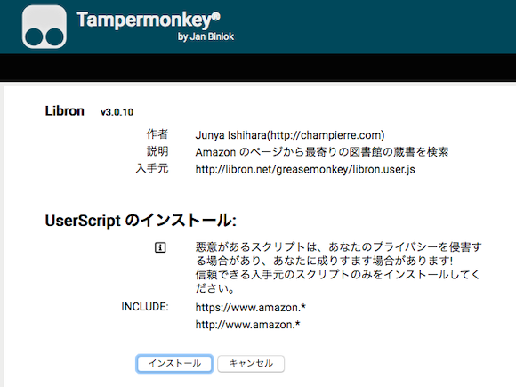
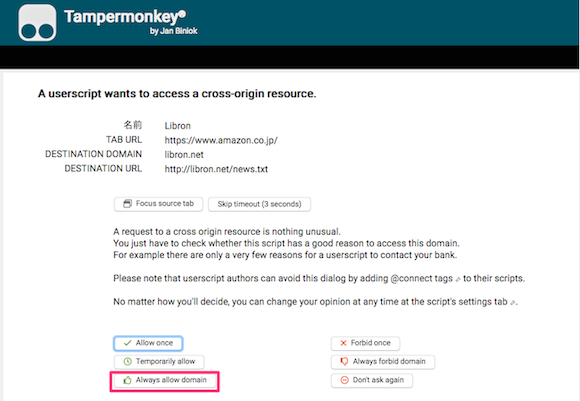
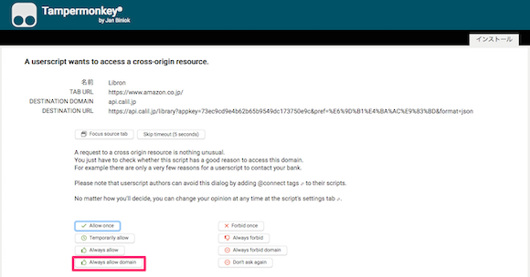

LibronをFirefoxで利用するには、まずGreasemonkey互換のTampermonkeyというAdd-onをインストールする必要があります。
以下のリンク先よりインストールして下さい。
» Tampermonkey :: Add-ons for Firefox
次に以下のリンク先より、Libron Greasemonkey版をインストールします。
上記リンクをクリックすると、Tampermonkeyの画面が表示され、インストールの確認を求められます。「インストール」をクリックしてLibronをインストールします。

Libronをインストールできたら、Amazonのページ(https://www.amazon.co.jp/)にアクセスします。
Libronの最新情報と蔵書検索の結果を取得するためLibronはlibron.netとapi.calil.jpにアクセスする必要があります。2つのサーバーに対するクロスドメインアクセスの許可を求める画面が表示されるので、両方とも「Always allow domain」のボタンをクリックして許可してください。
以上でLibronをFirefoxで使う準備は完了です。

